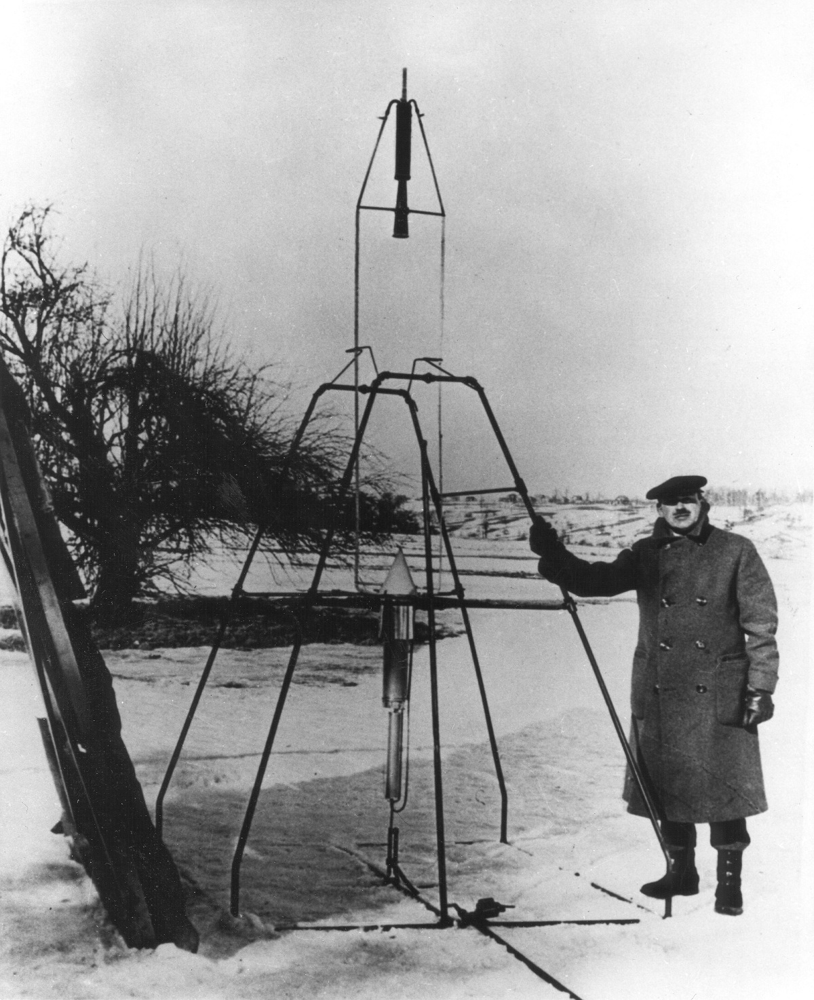

Direct and indirect methods for the Goddard problem
Introduction
For this example, we consider the well-known Goddard problem[1] [2] which models the ascent of a rocket through the atmosphere, and we restrict here ourselves to vertical (one dimensional) trajectories. The state variables are the altitude $r$, speed $v$ and mass $m$ of the rocket during the flight, for a total dimension of 3. The rocket is subject to gravity $g$, thrust $u$ and drag force $D$ (function of speed and altitude). The final time $t_f$ is free, and the objective is to reach a maximal altitude with a bounded fuel consumption.
We thus want to solve the optimal control problem in Mayer form
\[ r(t_f) \to \max\]
subject to the controlled dynamics
\[ \dot{r} = v, \quad \dot{v} = \frac{T_{\max}\,u - D(r,v)}{m} - g, \quad \dot{m} = -u,\]
and subject to the control constraint $u(t) \in [0,1]$ and the state constraint $v(t) \leq v_{\max}$. The initial state is fixed while only the final mass is prescribed.
The Hamiltonian is affine with respect to the control, so singular arcs may occur, as well as constrained arcs due to the path constraint on the velocity (see below).
We import the OptimalControl.jl package to define the optimal control problem and NLPModelsIpopt.jl to solve it. We import the Plots.jl package to plot the solution. The OrdinaryDiffEq.jl package is used to define the shooting function for the indirect method and the MINPACK.jl package permits to solve the shooting equation.
using BenchmarkTools
using OptimalControl # to define the optimal control problem and more
using NLPModelsIpopt # to solve the problem via a direct method
using OrdinaryDiffEq # to get the Flow function from OptimalControl
using MINPACK # NLE solver: use to solve the shooting equation
using Plots # to plot the solutionOptimal control problem
We define the problem
const t0 = 0 # initial time
const r0 = 1 # initial altitude
const v0 = 0 # initial speed
const m0 = 1 # initial mass
const vmax = 0.1 # maximal authorized speed
const mf = 0.6 # final mass to target
ocp = @def begin # definition of the optimal control problem
tf ∈ R, variable
t ∈ [t0, tf], time
x = (r, v, m) ∈ R³, state
u ∈ R, control
x(t0) == [r0, v0, m0]
m(tf) == mf, (1)
0 ≤ u(t) ≤ 1
r(t) ≥ r0
0 ≤ v(t) ≤ vmax
ẋ(t) == F0(x(t)) + u(t) * F1(x(t))
r(tf) → max
end
# Dynamics
const Cd = 310
const Tmax = 3.5
const β = 500
const b = 2
F0(x) = begin
r, v, m = x
D = Cd * v^2 * exp(-β*(r - 1)) # Drag force
return [v, -D/m - 1/r^2, 0]
end
F1(x) = begin
r, v, m = x
return [0, Tmax/m, -b*Tmax]
endDirect method
We then solve it
direct_sol = solve(ocp; grid_size=100)▫ This is OptimalControl version v1.1.1 running with: direct, adnlp, ipopt.
▫ The optimal control problem is solved with CTDirect version v0.16.2.
┌─ The NLP is modelled with ADNLPModels and solved with NLPModelsIpopt.
│
├─ Number of time steps⋅: 100
└─ Discretisation scheme: trapeze
▫ This is Ipopt version 3.14.17, running with linear solver MUMPS 5.8.0.
Number of nonzeros in equality constraint Jacobian...: 2104
Number of nonzeros in inequality constraint Jacobian.: 0
Number of nonzeros in Lagrangian Hessian.............: 1111
Total number of variables............................: 405
variables with only lower bounds: 101
variables with lower and upper bounds: 202
variables with only upper bounds: 0
Total number of equality constraints.................: 304
Total number of inequality constraints...............: 0
inequality constraints with only lower bounds: 0
inequality constraints with lower and upper bounds: 0
inequality constraints with only upper bounds: 0
iter objective inf_pr inf_du lg(mu) ||d|| lg(rg) alpha_du alpha_pr ls
0 -1.0100000e+00 9.00e-01 2.00e+00 0.0 0.00e+00 - 0.00e+00 0.00e+00 0
1 -1.0090670e+00 8.99e-01 6.67e+01 1.3 1.67e+02 - 3.64e-03 5.93e-04f 1
2 -1.0000907e+00 8.74e-01 1.83e+02 1.0 6.64e+00 - 3.63e-02 2.83e-02h 1
3 -1.0023670e+00 8.37e-01 1.34e+04 1.0 6.91e+00 - 2.11e-01 4.19e-02f 1
4 -1.0025025e+00 7.70e-01 9.45e+03 1.5 4.04e+00 - 1.00e+00 8.09e-02f 1
5 -1.0033626e+00 7.16e-01 1.48e+05 2.3 3.56e+00 - 3.73e-01 6.94e-02f 1
6 -1.0142503e+00 9.62e-03 3.99e+04 2.3 7.16e-01 - 4.49e-01 9.90e-01h 1
7 -1.0101264e+00 4.21e-03 4.24e+05 1.8 5.32e-01 - 5.03e-01 9.90e-01h 1
8 -1.0068427e+00 3.20e-04 2.87e+06 0.9 2.44e-01 - 6.73e-01 9.91e-01h 1
9 -1.0067336e+00 2.64e-06 2.30e+07 0.1 7.39e-02 - 7.07e-01 1.00e+00f 1
iter objective inf_pr inf_du lg(mu) ||d|| lg(rg) alpha_du alpha_pr ls
10 -1.0067340e+00 1.13e-10 6.50e+05 -5.0 2.90e-04 - 9.89e-01 1.00e+00h 1
11 -1.0067350e+00 2.81e-10 7.20e+03 -7.0 4.26e-04 - 9.89e-01 1.00e+00h 1
12 -1.0078967e+00 9.07e-04 5.95e+03 -3.0 7.61e-01 - 6.55e-01 7.21e-01f 1
13 -1.0081866e+00 3.67e-06 9.38e+03 -9.0 1.31e-02 - 8.60e-01 1.00e+00h 1
14 -1.0091814e+00 1.57e-04 1.79e+02 -4.6 2.18e-01 - 1.00e+00 9.28e-01h 1
15 -1.0105115e+00 2.55e-04 7.17e+02 -4.4 3.09e-01 - 1.00e+00 5.75e-01h 1
16 -1.0114149e+00 2.34e-05 7.98e-04 -5.1 4.29e-02 - 1.00e+00 1.00e+00h 1
17 -1.0122891e+00 7.90e-05 1.24e+02 -5.8 1.25e-01 - 9.98e-01 7.92e-01h 1
18 -1.0125091e+00 2.83e-05 4.85e-04 -6.1 1.06e-01 - 1.00e+00 1.00e+00h 1
19 -1.0125585e+00 1.21e-05 8.67e-05 -6.8 1.01e-01 - 1.00e+00 1.00e+00h 1
iter objective inf_pr inf_du lg(mu) ||d|| lg(rg) alpha_du alpha_pr ls
20 -1.0125675e+00 4.40e-06 3.01e-05 -7.3 9.80e-02 - 1.00e+00 1.00e+00h 1
21 -1.0125707e+00 1.75e-06 3.70e-02 -8.0 1.14e-01 - 1.00e+00 9.91e-01h 1
22 -1.0125714e+00 9.50e-07 4.98e-03 -8.6 1.37e-01 - 1.00e+00 9.94e-01h 1
23 -1.0125716e+00 5.06e-08 6.91e-04 -9.3 2.57e-02 - 1.00e+00 9.96e-01h 1
24 -1.0125716e+00 1.25e-10 1.08e-09 -11.0 2.15e-03 - 1.00e+00 1.00e+00h 1
Number of Iterations....: 24
(scaled) (unscaled)
Objective...............: -1.0125716188789129e+00 -1.0125716188789129e+00
Dual infeasibility......: 1.0759898712201739e-09 1.0759898712201739e-09
Constraint violation....: 1.5779266782089962e-11 1.2476868149757792e-10
Variable bound violation: 6.1594570555101313e-09 6.1594570555101313e-09
Complementarity.........: 1.5140175167764649e-11 1.5140175167764649e-11
Overall NLP error.......: 1.5779266782089962e-11 1.0759898712201739e-09
Number of objective function evaluations = 25
Number of objective gradient evaluations = 25
Number of equality constraint evaluations = 25
Number of inequality constraint evaluations = 0
Number of equality constraint Jacobian evaluations = 25
Number of inequality constraint Jacobian evaluations = 0
Number of Lagrangian Hessian evaluations = 24
Total seconds in IPOPT = 2.283
EXIT: Optimal Solution Found.and plot the solution
plt = plot(direct_sol, label="direct", size=(800, 800))
Structure of the solution
We first determine visually the structure of the optimal solution which is composed of a bang arc with maximal control, followed by a singular arc, then by a boundary arc and the final arc is with zero control. Note that the switching function vanishes along the singular and boundary arcs.
t = time_grid(direct_sol) # the time grid as a vector
x = state(direct_sol) # the state as a function of time
u = control(direct_sol) # the control as a function of time
p = costate(direct_sol) # the costate as a function of time
H1 = Lift(F1) # H1(x, p) = p' * F1(x)
φ(t) = H1(x(t), p(t)) # switching function
g(x) = vmax - x[2] # state constraint v ≤ vmax
u_plot = plot(t, u, linewidth=2, label = "u(t)")
H1_plot = plot(t, φ, linewidth=2, label = "H₁(x(t), p(t))")
g_plot = plot(t, g ∘ x, linewidth=2, label = "g(x(t))")
plot(u_plot, H1_plot, g_plot, layout=(3,1), size=(600, 600))
We are now in position to solve the problem by an indirect shooting method. We first define the four control laws in feedback form and their associated flows. For this we need to compute some Lie derivatives, namely Poisson brackets of Hamiltonians (themselves obtained as lifts to the cotangent bundle of vector fields), or derivatives of functions along a vector field. For instance, the control along the minimal order singular arcs is obtained as the quotient
\[u_s = -\frac{H_{001}}{H_{101}}\]
of length three Poisson brackets:
\[H_{001} = \{H_0,\{H_0,H_1\}\}, \quad H_{101} = \{H_1,\{H_0,H_1\}\}\]
where, for two Hamiltonians $H$ and $G$,
\[\{H,G\} := (\nabla_p H|\nabla_x G) - (\nabla_x H|\nabla_p G).\]
While the Lie derivative of a function $f$ wrt. a vector field $X$ is simply obtained as
\[(X \cdot f)(x) := f'(x) \cdot X(x),\]
and is used to the compute the control along the boundary arc,
\[u_b(x) = -(F_0 \cdot g)(x) / (F_1 \cdot g)(x),\]
as well as the associated multiplier for the order one state constraint on the velocity:
\[\mu(x, p) = H_{01}(x, p) / (F_1 \cdot g)(x).\]
The Poisson bracket $\{H,G\}$ is also given by the Lie derivative of $G$ along the Hamiltonian vector field $X_H = (\nabla_p H, -\nabla_x H)$ of $H$, that is
\[ \{H,G\} = X_H \cdot G\]
which is the reason why we use the @Lie macro to compute Poisson brackets below.
With the help of differential geometry primitives, these expressions are straightforwardly translated into Julia code:
# Controls
const u0 = 0 # off control
const u1 = 1 # bang control
H0 = Lift(F0) # H0(x, p) = p' * F0(x)
H01 = @Lie {H0, H1}
H001 = @Lie {H0, H01}
H101 = @Lie {H1, H01}
us(x, p) = -H001(x, p) / H101(x, p) # singular control
ub(x) = -(F0⋅g)(x) / (F1⋅g)(x) # boundary control
μ(x, p) = H01(x, p) / (F1⋅g)(x) # multiplier associated to the state constraint g
# Flows
f0 = Flow(ocp, (x, p, tf) -> u0)
f1 = Flow(ocp, (x, p, tf) -> u1)
fs = Flow(ocp, (x, p, tf) -> us(x, p))
fb = Flow(ocp, (x, p, tf) -> ub(x), (x, u, tf) -> g(x), (x, p, tf) -> μ(x, p))Shooting function
Then, we define the shooting function according to the optimal structure we have determined, that is a concatenation of four arcs.
x0 = [r0, v0, m0] # initial state
function shoot!(s, p0, t1, t2, t3, tf)
x1, p1 = f1(t0, x0, p0, t1)
x2, p2 = fs(t1, x1, p1, t2)
x3, p3 = fb(t2, x2, p2, t3)
xf, pf = f0(t3, x3, p3, tf)
s[1] = xf[3] - mf # final mass constraint
s[2:3] = pf[1:2] - [1, 0] # transversality conditions
s[4] = H1(x1, p1) # H1 = H01 = 0
s[5] = H01(x1, p1) # at the entrance of the singular arc
s[6] = g(x2) # g = 0 when entering the boundary arc
s[7] = H0(xf, pf) # since tf is free
endInitial guess
To solve the problem by an indirect shooting method, we then need a good initial guess, that is a good approximation of the initial costate, the three switching times and the final time.
η = 1e-3
t13 = t[ abs.(φ.(t)) .≤ η ]
t23 = t[ 0 .≤ (g ∘ x).(t) .≤ η ]
p0 = p(t0)
t1 = min(t13...)
t2 = min(t23...)
t3 = max(t23...)
tf = t[end]
println("p0 = ", p0)
println("t1 = ", t1)
println("t2 = ", t2)
println("t3 = ", t3)
println("tf = ", tf)
# Norm of the shooting function at solution
using LinearAlgebra: norm
s = similar(p0, 7)
shoot!(s, p0, t1, t2, t3, tf)
println("\nNorm of the shooting function: ‖s‖ = ", norm(s), "\n")p0 = [3.942091355812247, 0.1462714039840518, 0.05411785715965977]
t1 = 0.018178502658805416
t2 = 0.060595008862684714
t3 = 0.07877351152149013
tf = 0.20198336287561572
Norm of the shooting function: ‖s‖ = 3.2498553744370993Indirect shooting
We aggregate the data to define the initial guess vector.
ξ = [p0..., t1, t2, t3, tf] # initial guess7-element Vector{Float64}:
3.942091355812247
0.1462714039840518
0.05411785715965977
0.018178502658805416
0.060595008862684714
0.07877351152149013
0.20198336287561572MINPACK.jl
We can use the MINPACK.jl package to solve the shooting equation. To compute the Jacobian of the shooting function we use the DifferentiationInterface.jl package with ForwardDiff.jl backend.
using DifferentiationInterface
import ForwardDiff
backend = AutoForwardDiff()Let us define the problem to solve.
# auxiliary function with aggregated inputs
nle!(s, ξ) = shoot!(s, ξ[1:3], ξ[4], ξ[5], ξ[6], ξ[7])
# Jacobian of the (auxiliary) shooting function
jnle!(js, ξ) = jacobian!(nle!, similar(ξ), js, backend, ξ)We are now in position to solve the problem with the hybrj solver from MINPACK.jl through the fsolve function, providing the Jacobian. Let us solve the problem and retrieve the initial costate solution.
# resolution of S(ξ) = 0
indirect_sol = fsolve(nle!, jnle!, ξ, show_trace=true)
# we retrieve the costate solution together with the times
ξ = indirect_sol.x
p0, t1, t2, t3, tf = ξ[1:3], ξ[4:end]...
println("MINPACK results:")
println("p0 = ", p0)
println("t1 = ", t1)
println("t2 = ", t2)
println("t3 = ", t3)
println("tf = ", tf)
# Norm of the shooting function at solution
s = similar(p0, 7)
shoot!(s, p0, t1, t2, t3, tf)
println("\nNorm of the shooting function: ‖s‖ = ", norm(s), "\n")Iter f(x) inf-norm Step 2-norm Step time
------ -------------- -------------- --------------
1 3.242784e+00 0.000000e+00 0.379496
2 4.672585e-01 2.618905e-03 77.884012
3 7.884030e-01 1.047562e-02 0.053848
4 2.492423e-01 2.245549e-02 0.026319
5 8.942007e-02 6.390871e-04 0.026369
6 8.435809e-02 1.032502e-03 0.032998
7 2.615330e-02 1.985801e-03 0.027781
8 3.869050e-03 2.128666e-04 0.027200
9 2.711822e-03 3.473928e-08 0.032755
10 4.672197e-03 2.028838e-07 0.026649
11 2.558166e-04 9.506587e-07 0.027079
12 2.555473e-05 1.734439e-09 0.033350
13 8.061570e-06 9.889605e-12 0.026018
14 2.032998e-05 3.955842e-11 0.025469
15 5.606448e-07 1.545552e-11 0.030832
16 5.728787e-07 6.691035e-15 0.026448
17 3.532512e-07 2.611762e-15 0.026191
18 2.694114e-07 3.338601e-16 0.032224
19 2.428953e-09 3.362765e-15 0.025766
20 1.427651e-10 5.432495e-19 0.024371
MINPACK results:
p0 = [3.9457646586732578, 0.15039559623542198, 0.053712712942074935]
t1 = 0.02350968403946156
t2 = 0.059737380907012985
t3 = 0.10157134842402529
tf = 0.20204744057214977
Norm of the shooting function: ‖s‖ = 1.487184644676261e-10NonlinearSolve.jl
Alternatively, we can use the NonlinearSolve.jl package to solve the shooting equation. The code is similar, but we use the solve function instead of fsolve. Let us define the problem.
nle!(s, ξ, λ) = shoot!(s, ξ[1:3], ξ[4], ξ[5], ξ[6], ξ[7])
prob = NonlinearProblem(nle!, ξ)Now, let us solve the problem and retrieve the initial costate and times.
# resolution of S(ξ) = 0
sol = solve(prob; show_trace=Val(true))
# we retrieve the costate solution together with the times
ξ = sol.u
p0, t1, t2, t3, tf = ξ[1:3], ξ[4:end]...
println("\nNonlinearSolve results:")
println("p0 = ", p0)
println("t1 = ", t1)
println("t2 = ", t2)
println("t3 = ", t3)
println("tf = ", tf)
# Norm of the shooting function at solution
s = similar(p0, 7)
shoot!(s, p0, t1, t2, t3, tf)
println("\nNorm of the shooting function: ‖s‖ = ", norm(s), "\n")
Algorithm: NewtonRaphson(
descent = NewtonDescent(),
autodiff = AutoForwardDiff(),
vjp_autodiff = AutoReverseDiff(
compile = false
),
jvp_autodiff = AutoForwardDiff(),
concrete_jac = Val{false}()
)
---- ------------- -----------
Iter f(u) inf-norm Step 2-norm
---- ------------- -----------
0 1.42765133e-10 0.00000000e+00
1 2.36166642e-12 1.85954387e-11
2 2.42339482e-12 9.48142536e-13
3 2.80220291e-13 1.10948190e-12
Final 2.80220291e-13
----------------------
NonlinearSolve results:
p0 = [3.9457646586894604, 0.15039559623165866, 0.053712712939703984]
t1 = 0.023509684041884568
t2 = 0.059737380899867645
t3 = 0.1015713484243153
tf = 0.20204744057100144
Norm of the shooting function: ‖s‖ = 3.173518531923747e-13Benchmarking
The results found for by the two solvers are extremely close, so now, lets benchmark these two resolutions to compare their performances.
@benchmark fsolve(nle!, jnle!, ξ; tol=1e-8, show_trace=false) #MINPACKBenchmarkTools.Trial: 23 samples with 1 evaluation per sample.
Range (min … max): 201.678 ms … 287.739 ms ┊ GC (min … max): 15.40% … 4.29%
Time (median): 223.912 ms ┊ GC (median): 21.28%
Time (mean ± σ): 224.846 ms ± 18.284 ms ┊ GC (mean ± σ): 19.35% ± 5.51%
█
▅▅▅▁▁▁▁▅▁▁▅█▁██▅██▁▅▅▁▁▁▁▁▁▁▁▁▁▁▁▁▁▁▁▁▁▁▁▁▁▁▅▁▁▁▁▁▁▁▁▁▁▁▁▁▁▁▅ ▁
202 ms Histogram: frequency by time 288 ms <
Memory estimate: 652.04 MiB, allocs estimate: 295527.@benchmark solve(prob; abstol=1e-8, reltol=1e-8, show_trace=Val(false)) # NonlinearSolveBenchmarkTools.Trial: 11 samples with 1 evaluation per sample.
Range (min … max): 400.918 ms … 485.990 ms ┊ GC (min … max): 10.16% … 21.98%
Time (median): 472.277 ms ┊ GC (median): 20.77%
Time (mean ± σ): 462.166 ms ± 30.601 ms ┊ GC (mean ± σ): 18.97% ± 5.76%
▁▁ ▁ █▁ ▁ ▁ ▁▁ ▁
██▁▁▁▁▁▁▁▁▁▁▁▁▁▁▁▁▁▁▁▁▁▁▁▁▁▁▁▁▁▁▁▁▁▁▁▁▁▁▁▁█▁▁▁▁▁▁▁██▁█▁█▁██▁█ ▁
401 ms Histogram: frequency by time 486 ms <
Memory estimate: 1.27 GiB, allocs estimate: 591018.According to the NonlinearSolve documentation, for small nonlinear systems, it could be faster to use the SimpleNewtonRaphson() descent algorithm.
@benchmark solve(prob, SimpleNewtonRaphson(); abstol=1e-8, reltol=1e-8, show_trace=Val(false)) # NonlinearSolveBenchmarkTools.Trial: 24 samples with 1 evaluation per sample.
Range (min … max): 179.242 ms … 282.589 ms ┊ GC (min … max): 12.53% … 4.60%
Time (median): 211.673 ms ┊ GC (median): 21.57%
Time (mean ± σ): 213.836 ms ± 19.634 ms ┊ GC (mean ± σ): 19.52% ± 5.53%
▁ ▁▄ ▁█ ▄
█▁▁▁▁▁▁▁▁▁▁▁▁▁▆██▆██▆▆█▆▁▁▁▁▁▁▆▁▁▁▁▁▁▁▁▆▁▁▁▁▁▁▁▁▁▁▁▁▁▁▁▁▁▁▁▁▆ ▁
179 ms Histogram: frequency by time 283 ms <
Memory estimate: 584.54 MiB, allocs estimate: 199780.MINPACK.jl (fsolve) is much faster than NonlinearSolve.jl (solve) on this problem. It also uses less memory. Both methods have a similar GC overhead, but MINPACK.jl is overall more efficient here.
Plot of the solution
We plot the solution of the indirect solution (in red) over the solution of the direct method (in blue).
f = f1 * (t1, fs) * (t2, fb) * (t3, f0) # concatenation of the flows
flow_sol = f((t0, tf), x0, p0) # compute the solution: state, costate, control...
plot!(plt, flow_sol, label="indirect")
References
- 1R.H. Goddard. A Method of Reaching Extreme Altitudes, volume 71(2) of Smithsonian Miscellaneous Collections. Smithsonian institution, City of Washington, 1919.
- 2H. Seywald and E.M. Cliff. Goddard problem in presence of a dynamic pressure limit. Journal of Guidance, Control, and Dynamics, 16(4):776–781, 1993.